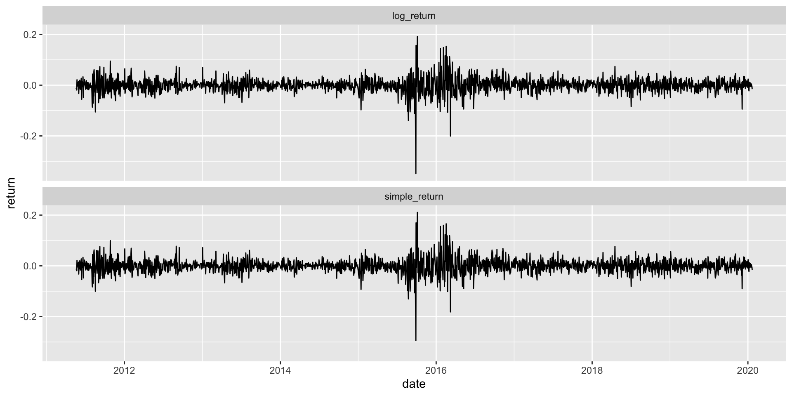

FIN7028: Asset returns
Barry Quinn
2024-02-07
Asset returns
- The most important financial time series are asset prices, exchange rates and interest rates.
- Most financial studies involve returns rather than prices.
- Campbell et al. (1997) gives two main reasons for using returns:
- For an average investor, returns of an asset is a complete and scale-free summary of the investment opportunity.
- Return series are easier to handle than price series because the former have more attractive statistical properties.
One-period simple returns
- Let Pt be the price of an asset at time index t and assume the asset pays no dividend.
- One-Period Simple Return:
- Holding the asset for one period from date t-1 to date t would result in a simple gross return
\[ 1+R_t= \frac{P_t}{P_{t-1}} \;or\; P_t=P_{t-1}(1+R_t) \]
- The corresponding simple net return or simple return is:
\[ R_t= \frac{P_t}{P_{t-1}}-1= \;or\; \frac{P_t-P_{t-1}}{P_{t-1}} \]
Multiperiod simple returns
- Holding the asset for k period between dates t-k and t gives a k period simple gross return:
\[1+R_t[k] = \frac{P_t}{P_{t-k}}=\frac{P_t}{P_{t-1}}\times\frac{P_{t-1}}{P_{t-2}} \times \dots \times \frac{P_{t-k+1}}{P_{t-k}}\] \[=(1+R_t)(1+R_{t-1})\dots(1+R_{t-k+1})\] \[=\prod^{k-1}_{j=0}(1+R_{t-j})\]
- The k period simple gross return is simply the product of the k one-period simple gross returns; or the compound return.
- The k-period simple net return is \(R_t[k]= \frac{(P_t-P_{t-k})}{P_{t-k}}\)
Time interval
- In practice, the actual time interval is important in discussing and comparing returns (e.g., monthly returns or annual returns).
- If the time interval is not given, it is implicitly assumed to be one year.
- If the asset is held for k years, then the annualised (average) return is defined as:
\[\text{Annualised}\{R_t[k]\} = \left[\prod^{k-1}_{j=0}(1+R_{t-j})\right]^{1/k}-1\]
Time interval
- As one-period returns tend to be small, a first-order Taylor expansion to approximate the annualised returns is:
\[\text{Annualised}\{R_t[k]\} \approx \frac{1}{k}\sum^{k-1}_{j=0}R_{t-j}\]
- Accuracy of this approximation may not be sufficient in some applications.
Continuously compounded returns
- The natural logarithm of the simple gross return of an asset is called the continuously compounded return or log return
\[ r_t=ln(1+R_t)=ln \left(\frac{P_t}{P_{t-1}} \right)=p_t-p_{t-1} \ \text{where }p_t=ln(P_t) \]
Advantages
- Firstly, continuously compounded multiperiod return is simply the sum of the continuously compounded one-period returns.
\[r_t[k]=ln(1+R_t[k])=ln[(1+R_t)(1+R_{t-1})\dots(1+R_{t-k+1})]\]
\[=ln(1+R_t)+ln(1+R_{t-1})+\dots +ln(1+R_{t-k+1})\]
\[=r_t+r_{t-1}+\dots+r_{t-k+1}\]
- Secondly, statistical properties of log returns are tractable, easy to calculate with.
Portfolio returns
The simple net return of a portfolio consisting of N assets is a weighted average of the simple net returns of the assets involved, where the weight on each asset is the percentage of the portfolio’s value invested in that asset.
Let p be a portfolio that places weights wi on asset i.
Then the simple return of p at time t is:
\[R_{p,t}=\sum_{i=1}^{N}w_iR_{it}\text{ where}\sum w_i=1\]
Portfolio returns
- log returns of a portfolio do not have this additive property, but if the simple returns Rit are all small in magnitude then we have:
\[r_{p,t} \approx \sum_{i=1}^{N}w_ir_{it}\]
- \(r_{p,t}\) is the continuously compounded return of the portfolio.
- This approximation is usually used to study portfolio returns.
Dividend payment
- Asset returns must be modified if there is a periodic dividend
- Let Dt be the dividend of an asset between dates t-1 and t, the simple net return and continuously compounded return at time t become:
\[R_t= \frac{P_t+D_t}{P_{t-1}}-1 \; , \;r_t=ln(P_t+D_t)-ln(P_{t-1})\]
- This adjustment is commonly referred to as a total return.
Excess return
- Excess returns of an assets at time t is the difference between the asset’s return and the return on some reference asset.
- The reference asset is often taken to be riskless such as a short-term UK government bond returns.
- In portfolio performance analysis of actively managed funds a benchmark return is often used.
- Queens Student Managed Fund (QSMF) is benchmarked against the FTSE 350 Index.
- The simple excess return and log excess return of an asset are then defined as:
\[Z_t=R_t-R_{0t}, \; z_t=r_t-r_{0t}\]
- where R0t and r0t are the simple and log returns of the reference asset, respectively.
- In finance literature, the excess return is thought of as the payoff on an arbitrage portfolio that goes long in an asset and short in the reference assets with no net initial investment.
- In portfolio analytics, active return is the excess return compared to the passive benchmark return.
Examples
- Simple return Vs Log returns
- Plot shows a time plot of daily simple and log returns of Glencore stock from 2011-05-19 to 2020-01-21.
- There are 2180 observations.
- From the plots, the behaviour of log returns is very similar to simple returns.
- The correlation coefficient between log and simple returns is 0.9997.
- This is expected, as when x is close to zero, \(log(1+x) \approx x\) and daily simple returns of Glencore are small in the sampling period.
Financial Returns Characteristics
- Daily log returns are simply the change series of log prices.
- In
R, a change series can easily be obtained by taking the difference of log pricesdiff(log(price)). - In Figure 1.2 the adjusted daily price is used as it accounts for stock splits.
- In Figure 1.1 the total return calculations includes both stock splits and dividend income.
Inference from time plot of log returns
There exist some large outlying observations
The returns were volatile in certain periods but stable in others. We can thus infer:
Statistically the returns have heavy tails
The returns series is characterised by volatility clustering
Bond yields and prices
What is a Bond?
- A financial instrument which pays the face value (par value) to its holder at the time of maturity.
- Some bonds also pay interest periodically; coupon payments.
- Zero-coupons bonds do not pay periodic interest.
- Bond yield is the return recieved for holding a bond to maturity.
Current yield
- The percentage return that the annual coupon payment provides the investor
\[ \text{Current Yield}_t = \frac{ \text{Annual Interest paid in dollars}}{\text{Market Price of the Bond}_t} \times 100% \]
- For a zero-coupon bond the yield is defined as:
\[ \text{Current Yield}_t=\frac{ \text{Annual Interest paid in dollars}}{\text{Market Price of the Bond}_t}^{1/k}-1 \\ \text{where }k\text{ denotes time to maturity in years} \] * The definition shows it is typically time dependent (\(_t\) subscript) and does not include capital gains/losses.
Yield to maturity
- Considers the time value of money by equating the bond price to the present value of future payments.
- YTM is a more common way to measure bond investment.
- It’s calculation is more complex and calibration is required to find an accurate approximation.
Yield to maturity
- Suppose that the bond holder will receive \(k\) payments between purchase and maturity then:
\[ P=\frac{C_1}{1+y}+\frac{C_2}{(1+y)^2}+\dots+\frac{C_k+F}{(1+y)^k} \]
- Where \(P\) is the price of the bond, \(y\) is YTM, \(C_I\) is the ith coupon payment, and \(F\) denotes face value.
- From the above equation the price of the bond has an inverse relationship to the YTM.
US government bonds
- US government issues various bonds to finance its debts.
- These include
- Treasury Notes
- Treasury Bonds
- Treasury Bills
Treasury notes
- Treasury notes (T-Notes) mature in 1-10 years.
- They have a coupon payment every 6 months and a face value of $1000
- Notes are quoted on the secondary market at percantage of face value in thirty-seconds of a point.
- For example a quote of 95:08 indicates it is trading at a discount $(95+8/32) X 1000/100 = $953.5
- The 10-year note is the most frequently quoted in discussions of the US government bond market.
Treasury bills
- US government issues various bonds to finance its debts.
- Treasury Bills (T-Bills) mature in one year or less.
- They pay no interest prior to maturity.
- They are sold at a discount of face value to create a positive yield to maturity.
- The minimum purchase is $100.
- The discount yield (%) of T-Bills is calculated via
\[ \text{Discount yield }=\frac{F-P}{F}\times\frac{360}{\text{Days till maturity}}\times \text{100} \]
Treasury bills
- Bills are quoted differently from notes and bonds, since bills do not pay an established interest rate.
- The return on a bill is the difference betweeen the purchase and subsequent sale price, or when held to maturity, the face value paid by the Treasury.
- Thus bills are quoted at a discount to face value, with the discount expressed as an annual rate based on a 360-day years, for example:
|ISSUE| BID |ASK| CHANGE| YIELD| |:–:|::|::|::|::| |12-3-98 |5.08 | 5.06 | -.03|5.26
Treasury bonds
- T-Bonds have longer maturities (20-30 years).
- They have a 6 month coupon payment and are commonly issued with maturities of 30 years.
Implied volatility
- Stock options are financial contracts which give the holder the right to buy (call option) or sell (put option) a stock at a prespecified price (strike price) within a given time period.
- Black-Scholes defines the price of an option as dependent on, the strike price, risk-free interest rate, current price and volatility of the stock.
- In practice, the stock volatility is not observed but backed out of the Black-Scholes formula as an implied volatility using calibration.
CBOE VIX index
- The VIX index is the most well-known implied volatility.
- It measures the US stock market’s expectation of 30-day volatility implied by averaging prices of S&P 500 index puts and calls over a wide range of strike prices.
- It is often regarded as the market fear factor, and can openly be traded using VIX futures and options.
The statistical forecasting perspective
- Thing to be forecast: a random variable, \(y_t\).
- Forecast distributin: If \({\cal I}\) is all observations, then \(y_{t} |{\cal I}\) means
the random variable $y_{t}$ given what we know in ${\cal I}$ - The point forecast: is the mean (or median) of \(y_{t} |{\cal I}\)
- The Forecast variance: is \(\text{var}[y_{t} |{\cal I}]\)
- A prediction interval or interval forecast is a range of values of \(y_t\) with high probability.
- With time series, \({y}_{t|t-1} = y_t | \{y_1,y_2,\dots,y_{t-1}\}\).
- \(\hat{y}_{T+h|T} =\text{E}[y_{T+h} | y_1,\dots,y_T]\) (a \(h\)-step forecast taking account of all observations up to time \(T\)).